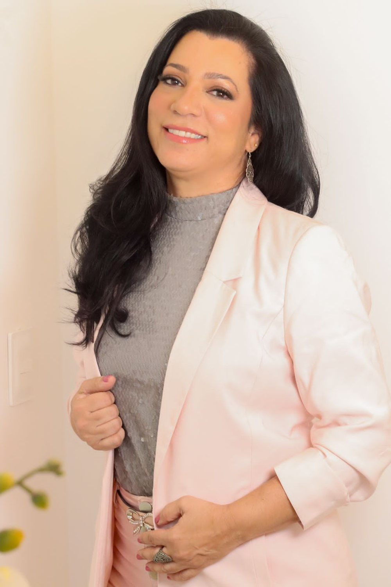
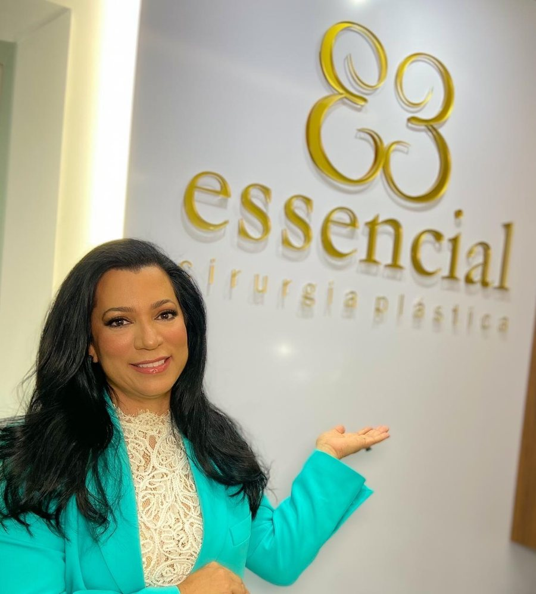
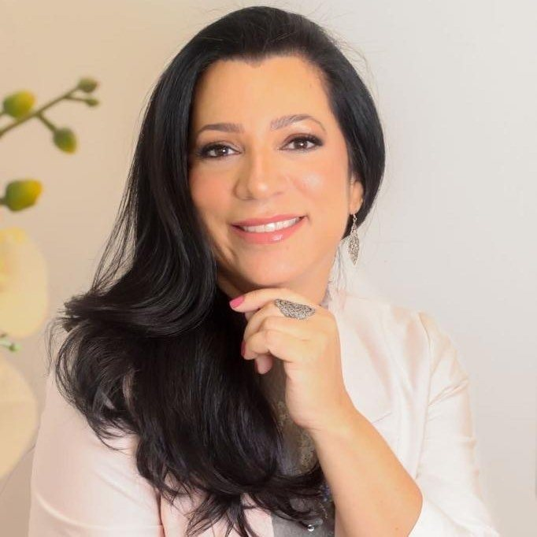
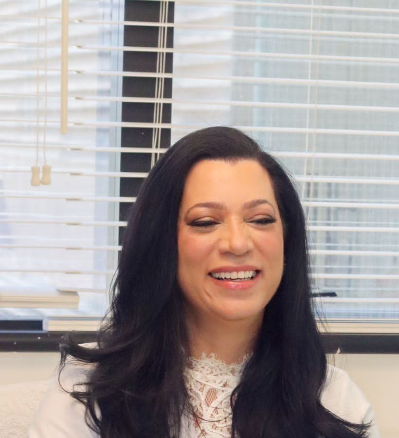

essencial · cirurgia plástica
Cirurgiã plástica · CRM-BA 11285 · RQE 4050
Dra. Liliam Carvalho
Cirurgia plástica da face, das mamas e do corpo, no consultório Essencial.
Membro especialista da Sociedade Brasileira de Cirurgia Plástica, formada pela Escola Bahiana de Medicina em 1990. Atende no Centro Odonto Médico Linus Pauling, entre a Pituba e o Itaigara. No Instagram, apresenta-se como “Facelift em Salvador”.
5,0 ★★★★★ 18 avaliações no GooglePituba/Itaigara · hora marcada

Por onde começar
O que trouxe você até aqui?
Escolha um assunto e leia com calma, antes da consulta. São informações gerais: a indicação é sempre individual, definida em consulta.
A flacidez do rosto e do pescoço me incomoda
O facelift: o que ele corrige, onde ficam as cicatrizes e como é a recuperação.
FaceliftOlharSinto as pálpebras pesadas
A blefaroplastia das pálpebras superiores e inferiores.
BlefaroplastiaConsultaQuero saber como é a primeira consulta
Como agendar, o que levar e como é a conversa na Essencial.
Primeira consultaA médicaQuero conhecer a Dra. Liliam
Formação, residências e a Sociedade Brasileira de Cirurgia Plástica.
Sobre a Dra. LiliamFacelift em Salvador
O que o facelift pode corrigir.
São os cinco pontos da arte que a Dra. Liliam publica, “Você sabia os pontos que o Facelift pode corrigir?”, explicados aqui em linhas gerais, num desenho esquemático.
- 1Queda do supercílioCom o tempo, a sobrancelha pode descer e pesar sobre o olhar. A elevação do supercílio pode ser associada ao lifting, conforme a avaliação.
- 2Flacidez da faceA perda de sustentação dos tecidos do meio e da parte de baixo do rosto, que o lifting reposiciona.
- 3“Bigode chinês”O sulco que vai das asas do nariz aos cantos da boca e se aprofunda quando os tecidos da face descem.
- 4Sulcos profundosMarcas no terço inferior do rosto, como as que descem dos cantos da boca. Alguns pedem tratamentos complementares.
- 5Papada do pescoçoPele e gordura sob o queixo e a flacidez do pescoço, tratadas junto com a face quando há indicação.
A indicação é individual, definida em consulta. Nem todo ponto pede o mesmo tratamento, e alguns podem pedir procedimentos associados ou complementares.
Ler a página do facelift
O consultório
A Essencial, na sala 108.
No Centro Odonto Médico Linus Pauling, entre a Pituba e o Itaigara, fica a Essencial Cirurgia Plástica: o consultório da Dra. Liliam, com o monograma dourado na parede. A consulta é individual e com hora marcada.
- Sala 108Centro Odonto Médico Linus Pauling · R. Altino Serbeto de Barros, 119
- Hora marcadaDas 9h às 17h. Confirme o dia e o horário com a equipe.
- WhatsApp(71) 99338-9696, o número da ficha no Google e do perfil na SBCP

Como ela se apresenta
“Cirurgia Plástica com responsabilidade, equilíbrio e naturalidade.”
“Médica cirurgiã plástica, formada pela Escola Bahiana de Medicina e Saúde Pública (EBMSP).”
“Realizou Residência Médica em Cirurgia Geral no Hospital Cardoso Fontes, no Rio de Janeiro, e em Cirurgia Plástica no Hospital São Rafael, em Salvador.”
Frases do site da Dra. Liliam, draliliamcarvalho.com, na versão arquivada pelo Internet Archive (maio de 2026).
Procedimentos
Seis cirurgias, nas palavras do site dela.
Face, nariz, mamas e corpo. As descrições entre aspas são do site da Dra. Liliam, com cortes marcados por […]; cada cartão abre uma página com informações gerais para ler antes da consulta.
Facelift
Cirurgia que suaviza sinais do tempo e redefine contornos faciais […]Ler a página02Olhar
Blefaroplastia
Corrige excesso de pele e bolsas nas pálpebras […]Ler a página03Nariz
Rinoplastia
Remodela a estrutura nasal, […] podendo auxiliar na melhora da respiração.Ler a página04Mamas
Mamoplastia
Indicado para aumentar, reduzir ou reposicionar as mamas […]Ler a página05Corpo
Abdominoplastia
Remove o excesso de pele abdominal, indicada para flacidez após grandes perdas de peso ou gestações.Ler a página06Corpo
Lipoaspiração
Remove gordura localizada em áreas como abdômen, coxas e braços […]Ler a página
Textos do site draliliamcarvalho.com, na versão arquivada pelo Internet Archive.
Trajetória
Da Escola Bahiana à Essencial.
Formação e registro como a Dra. Liliam os descreve no perfil dela na Sociedade Brasileira de Cirurgia Plástica (SBCP), o mesmo texto do site dela.
Sobre a Dra. Liliam- 1990Graduação em MedicinaEscola Bahiana de Medicina e Saúde Pública (EBMSP), em Salvador.
- Rio de JaneiroResidência médica em Cirurgia GeralHospital Cardoso Fontes.
- SalvadorResidência médica em Cirurgia PlásticaHospital São Rafael.
- SBCPAssociado (Membro Especialista)Sociedade Brasileira de Cirurgia Plástica · CRM-BA 11285 · RQE 4050.
- HojeEssencial Cirurgia PlásticaO consultório dela no Centro Odonto Médico Linus Pauling, sala 108. No Instagram, “Facelift em Salvador”.
Avaliações no Google
O que dizem as avaliações.
O profissionalismo dessa equipe merece a maior nota.
Dedicada, responsável, companheira, e um exemplo de mulher e médica.
Empatia, engajamento com leveza. Muito profissionalismo na condução dos procedimentos e no acompanhamento pós cirúrgico.
Trechos de avaliações públicas da ficha da Dra. Liliam no Google, com nome abreviado e a data informada pelo Google.

A primeira consulta
Do primeiro contato à decisão.
A consulta é o começo: é nela que a indicação é feita, ou não. Leve as suas dúvidas anotadas e os exames que tiver.
- O contatoPelo WhatsApp (71) 99338-9696, o número da ficha no Google e do perfil da Dra. Liliam na SBCP.
- A hora marcadaA consulta é agendada, das 9h às 17h. Confirme o dia e o horário com a equipe.
- A conversaA sua queixa, o que você deseja, a sua história de saúde e o exame.
- As informaçõesOpções, riscos, cuidados e recuperação, explicados para o seu caso.
- A decisãoTomada por você, com calma e com as informações na mão.
Consultório
Linus Pauling, sala 108.
Na R. Altino Serbeto de Barros, entre a Pituba e o Itaigara. O endereço é o mesmo na ficha do Google, no perfil da SBCP e na Receita Federal.
Essencial Cirurgia PlásticaCentro Odonto Médico Linus Pauling · R. Altino Serbeto de Barros, 119, sala 108 · Pituba/Itaigara · Salvador – BA · CEP 41830-492
Atendimento com hora marcada, das 9h às 17h — confirme com a equipe.
WhatsApp (71) 99338-9696
Dúvidas frequentes
Perguntas comuns
Onde fica o consultório?
Na Essencial Cirurgia Plástica: Centro Odonto Médico Linus Pauling, R. Altino Serbeto de Barros, 119, sala 108, Pituba/Itaigara, Salvador. Veja endereço e mapa.
Como agendar uma consulta?
Pelo WhatsApp (71) 99338-9696. O atendimento é com hora marcada, das 9h às 17h: confirme o dia e o horário com a equipe.
A Dra. Liliam é membro da SBCP?
Sim. No perfil da Sociedade Brasileira de Cirurgia Plástica, ela aparece como Associado (Membro Especialista), com CRM-BA 11285 e RQE 4050.
O facelift trata os cinco pontos da arte?
Flacidez da face, papada do pescoço, sulcos, “bigode chinês” e queda do supercílio são queixas que costumam levar à consulta. Alguns pontos pedem procedimentos associados ou complementares. A indicação é individual, definida em consulta.
Onde são feitas as cirurgias?
O local de cada cirurgia é informado em consulta.
Aceita convênio?
Confirme com a equipe as condições de atendimento.
A consulta já define a cirurgia?
A consulta serve para avaliar a sua queixa e explicar as opções, com riscos e recuperação. A indicação é individual, e a decisão é sua.
Agende
Uma conversa com a Dra. Liliam, na Essencial.
Atendimento com hora marcada, das 9h às 17h, no Centro Odonto Médico Linus Pauling, sala 108. Fale com a equipe pelo WhatsApp (71) 99338-9696.